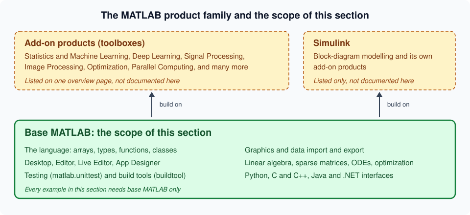

Getting Started
|
This content was generated with the assistance of AI and should be verified against the official documentation before being relied on in production. |
Written against MATLAB R2026b (announced 2026-09-28, the current release on 2026-10-22). R2026b is the "b" release of 2026; the "a" release (R2026a) came out in the spring. Examples marked "Octave 11.3.0 output" were run in GNU Octave 11.3.0 in a throwaway container because MATLAB itself is not available to the author of this section; they are MATLAB code that Octave also accepts, but MATLAB lays out its output slightly differently (for instance T = 3×1 double column vector style headers are not printed by Octave). Everything else is checked line by line against the official R2026b documentation and labelled "not run here".
This is the first stop of the section. It says what MATLAB is, where it comes from, how to get it, and how to run a first statement, a first script and a first batch job. The desktop itself is on Desktop and Command Window; the language starts with Syntax, Statements and Variables.
What MATLAB is
MATLAB is a matrix-oriented programming language and an interactive environment for numerical computing, visualization and programming. The name is short for "matrix laboratory". Its documentation describes the language as the most natural way to express computational mathematics, backed by built-in graphics, a desktop built for experimentation, and the ability to scale analyses to larger data sets, clusters and clouds and to integrate with other languages (MATLAB documentation: Get Started with MATLAB).
Three properties explain most of the language:
-
The array is the basic object. A single number is a 1-by-1 array. Vectors, matrices and N-dimensional arrays are not libraries on top of the language; they are the language. Operators such as
*and\mean matrix operations, and element-wise forms (.*,./) are written with a dot. -
It is interpreted and interactive. Statements typed in the Command Window run at once and leave their results in the workspace, so exploring a problem is a conversation with the machine. The same statements saved in a file become a script.
-
Numerical building blocks come with it. Linear algebra, sparse matrices, interpolation, ODE solvers, Fourier transforms, 2-D and 3-D graphics and file import are all in the base product, as is a unit-testing framework and a build tool.
What it is used for
MATLAB is used in engineering, science, finance and education. Typical jobs are prototyping an algorithm, analysing measurement data, simulating a physical system, plotting results for a report, and teaching numerical methods. Control design and signal processing are two classic areas, but they are served mostly by add-on products rather than by the base language (see The product family). In this section the working example is heatflow, a simulation of heat diffusion on a rectangular plate, introduced on the landing page. It is the same problem the Fortran Reference solves, so the two languages can be compared.
Where MATLAB comes from
MATLAB was created by Cleve Moler in the late 1970s, when he was a professor of computer science at the University of New Mexico. He wanted students to use the Fortran libraries LINPACK (linear equations) and EISPACK (eigenvalue problems) without writing Fortran programs, so he wrote an interactive "matrix laboratory" as a front end to them. The first version knew only one data type, the matrix, which is why "everything is a matrix" is still the way the language is described. In the early 1980s Jack Little, an engineer, saw it and recognised its commercial value; he rewrote it in C, added programming features and graphics, and in 1984 Little, Moler and Steve Bangert founded The MathWorks, which still develops it (Moler and Little, "A History of MATLAB", Proceedings of the ACM on Programming Languages 4 (HOPL), 2020, DOI 10.1145/3386331).
Two consequences are worth knowing from the first day:
-
The column-major storage order and the 1-based indexing come from the Fortran libraries underneath. Design Philosophy and Coming from Other Languages draws the consequences.
-
Many function names are terse, because they were first typed on a terminal:
eig,svd,chol,qr,lu. They are the names of the matrix factorisations, not abbreviations of English words.
Cleve Moler’s own account is a better read than any summary; it is listed in the bibliography.
The product family
"MATLAB" is used in three senses, and mixing them up is the commonest confusion of beginners.
-
Base MATLAB is the language, the desktop, the numerical libraries, graphics, file I/O, the testing and build tools and the interfaces to other languages. It is the only thing this section documents.
-
Add-on products, usually called toolboxes, extend base MATLAB with domain functions: statistics and machine learning, signal processing, image processing, optimization, parallel computing and many others. They are separate products with their own licences. This section never uses them; Toolboxes and Add-On Products lists the main ones with a short description and a link.
-
Simulink is a block-diagram environment for modelling and simulating dynamic systems. It runs on top of MATLAB, has its own add-on products, and is also only listed on the toolboxes page.

The word "toolbox" is overloaded. It names the MathWorks add-on products, and, until R2026b, it also named user-written code bundled for sharing. Since R2026b such bundles are called packages, and "package" itself changed meaning twice: before R2024a it meant a +folder namespace, and since R2024b it means a MATLAB Package Manager package. The landing page has the table and Packages and the MATLAB Package Manager the details.
Installing MATLAB
MathWorks distributes MATLAB for Windows, macOS and Linux. The supported operating system versions and hardware change with each release; the system requirements page for the release is the authority and is not repeated here.
The installer
Sign in with a MathWorks account, download the installer for your platform, choose the licence, the installation folder and the products, and let it run. The installation guide is MathWorks documentation: Installing Products; the entry point for everything about installation and licensing is Installation and Licensing Documentation. Two points specific to recent releases:
-
The Help Center opens in the system web browser since R2024b and the old Help browser is gone. Documentation can still be installed for offline use.
-
Starting with R2026b, MATLAB no longer installs Java on Windows and Linux. If your code or an add-on needs a Java runtime, install the MATLAB Support for OpenJDK add-on or another compatible OpenJDK distribution afterwards (see Java, .NET and System Commands).
Installing from the command line with mpm
For servers, containers and continuous integration, the MATLAB Package Manager command-line tool mpm installs products and support packages without the graphical installer. Its documentation page for the install command gives the syntax:
mpm install --release=<release> --destination=<path/to/destination> --products=<product1> ... <productN>mpm also installs the products that the ones you name depend on. It requires the MATLAB Package Manager executable itself, which the page above links to. This command was not run here: it downloads gigabytes from MathWorks and needs a licence at the end. Do not confuse the operating-system tool mpm with the mpm* functions that manage packages from inside MATLAB since R2024b; both belong to the same package manager and are covered on Packages and the MATLAB Package Manager.
Licensing
MATLAB is commercial software and, unlike R or Python, cannot be used without a licence. The licence types, as presented on the Pricing and Licensing page, are:
| Licence | Who and what |
|---|---|
Individual (Standard) |
One person, for commercial or other use, bought directly from MathWorks. |
Student |
A reduced-price licence for enrolled students (MATLAB for Students). |
Home |
Personal, non-commercial use by hobbyists. |
Campus-Wide |
Site licence of a university: students and staff install MATLAB with their institutional account. |
Trial |
A time-limited evaluation of MATLAB and chosen add-on products (MATLAB trials). |
Concurrent and network named |
Organizational licences administered with a licence manager (Administering Organizational Licenses). |
Prices and conditions change and differ by country, so they are deliberately not quoted. Two practical rules apply: the licence is tied to a MathWorks account and to the products and release you installed, and a licence includes the right to the releases published during its maintenance (Software Maintenance Service) period.
A MathWorks account and licence details are personal. This section’s examples contain no licence key, account name or real host name, and neither should the code you publish.
MATLAB Online and MATLAB Drive
MATLAB Online gives you the latest MATLAB release in a standard web browser, on MathWorks-hosted computing and storage, with nothing to install. You start it from https://matlab.mathworks.com/ with the Open MATLAB Online button. It offers the current release with the features your licence allows, file sharing with view-only or can-edit access, links to share work globally, and a MATLAB Connector that synchronises desktop files with MATLAB Online and MATLAB Drive. Variables persist between sessions in MATLAB Online, unlike on the desktop, where the workspace is cleared when you quit. A free tier with limited use exists and the product page gives its current limits (MATLAB Online; Source: MATLAB documentation: MATLAB Online).
MATLAB Drive is cloud storage for your files that runs outside MATLAB and can be reached from MATLAB Online, MATLAB Mobile and any computer running MATLAB Connector. The function matlabdrive returns its root folder. You can share content from MATLAB or MATLAB Drive online and restore deleted files there. MATLAB also reads files from Microsoft OneDrive, and MATLAB Online can open Git repositories directly (Source: MATLAB documentation: Cloud File Storage).
MATLAB Online is also the quickest way to try every example of this section without an installation. See MATLAB IDEs & Tools for the desktop, online and editor options.
The first session
Start MATLAB and type statements after the prompt >> in the Command Window. The following session solves the smallest possible heatflow-style problem: a steady-state temperature on three interior points of a rod, as a tridiagonal linear system with the two end temperatures folded into the right-hand side. The matrix A is the 1-D version of the 5-point stencil that Linear Algebra builds in two dimensions.
x = 7*6
A = [4 -1 0; -1 4 -1; 0 -1 4];
b = [100; 0; 100];
T = A\b
r = norm(A*T - b) < 1e-12
t = linspace(0, 1, 5)
y = t.^2Octave 11.3.0 output (MATLAB prints the same values with its own spacing and size headers):
x = 42
T =
28.571
14.286
28.571
r = 1
t =
0 0.2500 0.5000 0.7500 1.0000
y =
0 0.0625 0.2500 0.5625 1.0000What happened, line by line:
-
x = 7*6creates the variablex. With no semicolon, MATLAB prints the result. A statement that returns a value you did not assign stores it in the variableans. -
A = [4 -1 0; -1 4 -1; 0 -1 4];builds a 3-by-3 matrix: spaces or commas separate columns, semicolons separate rows. The final semicolon suppresses the display. -
T = A\bsolves the linear systemA*T = b. The backslash is "left division"; for a square matrix it uses a factorisation, never an explicit inverse. -
norm(A*T - b) < 1e-12checks the residual. The result is a logical1, not the number 1: it has typelogical. -
t.^2squares each element; without the dot,t^2would be a matrix power and an error for a row vector. The difference between*and.*is the first thing to learn.
A first plot is one more line. It is not run here because the graphics system needs a display:
plot(t, y)
xlabel("t")
ylabel("y")
title("y = t^2")The text arguments are double-quoted string literals, available since R2017a. Older material uses single-quoted character vectors ('t'); both work, and Strings and Character Arrays explains the difference.
The Command Window at a glance
Press the up arrow to recall a previous statement, type the first letters first to filter the history, and press Esc to clear the current line. A comma or a semicolon separates several statements on one line, and only the ones ending with a comma (or nothing) display their result. The full tour is on Desktop and Command Window.
The first script and matlab -batch
The statements above become a program when you save them in a file. Create a file firstheat.m in the current folder:
% firstheat.m - smallest heatflow check: a tridiagonal steady state
A = [4 -1 0; -1 4 -1; 0 -1 4];
b = [100; 0; 100];
T = A\b;
fprintf("Centre temperature: %.3f\n", T(2));Type firstheat (the name without .m) in the Command Window to run it. A script runs in the current workspace, so A, b and T remain afterwards. Not run here as a file; the same four lines were run in Octave 11.3.0, which printed Centre temperature: 14.286. Scripts and Code Sections covers scripts in depth, and Functions the alternative that keeps variables private.
Source: MATLAB documentation: 2-D and 3-D Plots and the "Programming and Scripts" tutorial of Get Started with MATLAB
To run the script without opening the desktop, use the -batch startup option, which runs a statement non-interactively and exits. This is how scripts run on servers and in continuous integration:
matlab -batch "firstheat"The startup options page documents -batch "statement" (run non-interactively) next to -r "statement" (run interactively, so MATLAB stays open). The command is matlab on Linux, macOS and from the Windows system prompt; the pages for each platform list their other flags. Not run here, since it needs an installed MATLAB.
Releases, version and ver
MathWorks ships two releases a year. The "a" release arrives in spring (between March and May) and the "b" release in September; their names are R plus the year plus the letter, such as R2026a and R2026b. The "b" releases are not "more stable" or "long-term" releases, and there is no long-term-support branch: you use the current release or a recent one, and this section targets R2026b. Each page of this section says when a feature appeared, using these names, and What’s New and Migrating Older Code collects them.
Inside MATLAB, version returns the version number of MATLAB, and ver lists the installed products and their versions:
version
version("-release")
verNot run here, because the answers describe the installed MATLAB. The reference page documents the output formats, including the option that returns the release name such as 2026b.
The new desktop of R2025a
R2025a replaced the Java-based desktop with a new web-technology desktop. It has customizable sidebars on the left, right and bottom, a Files panel (formerly the Current Folder browser), a Workspace panel and the Command Window docked in them, light and dark themes, figures that open as tabs, a search box that finds toolstrip actions, settings and documentation, and better support for screen readers and keyboards. Preferences were renamed settings. Saved layouts from earlier releases are not supported, and some tools such as the Files and Workspace panels can no longer be undocked. The full description is on Desktop and Command Window (Source: MATLAB release notes, R2025a Environment).
GUIDE, the old interface builder, was also removed in R2025a; Building Apps with App Designer covers its replacement.
Where to go next
Take the free two-hour MATLAB Onramp course if you prefer a guided path, then follow the reading order on the landing page. The next page, Design Philosophy and Coming from Other Languages, is the one to read if you already program in Python, R, Julia, Fortran or C.
Pitfalls of the first week
-
Forgetting the dot.
A*Bis matrix multiplication and fails with the errorMATLAB:innerdim("Incorrect dimensions for matrix multiplication") when the inner sizes differ;A.*Bmultiplies element by element. In recent releases.*also expands compatible sizes (see Implicit Expansion and Compatible Sizes). -
Shadowing a function with a variable. Naming a variable
sum,maxorplotmakes the function unreachable in that workspace;clear sumrestores it.which sumshows what a name currently refers to. -
Using
iandjas loop counters and then as imaginary units.iandjare built-in functions that return the imaginary unit until you assign to them. -
Expecting the workspace to survive. On the desktop the workspace is cleared when you quit; save what you need (see Workspace Variables and MAT-Files).
-
Running from the wrong folder. A script is found only in the current folder or on the search path (see Search Path, Startup and Files).
Where older books differ
Books written for MATLAB 7 (2006 to 2010) describe a desktop with Java windows, the Help browser and "cell publishing"; these are the old desktop (replaced in R2025a), the Help browser (removed in R2024b, with documentation now opened in the system web browser) and publishing (largely superseded by live scripts). The command-line language they teach is still valid; what changes is mostly the environment around it.
See Also
-
MATLAB Reference — the section overview
References
-
Installation and Licensing Documentation, Installing Products and mpm install
-
Cleve Moler and Jack Little, A History of MATLAB, Proceedings of the ACM on Programming Languages 4 (HOPL), 2020